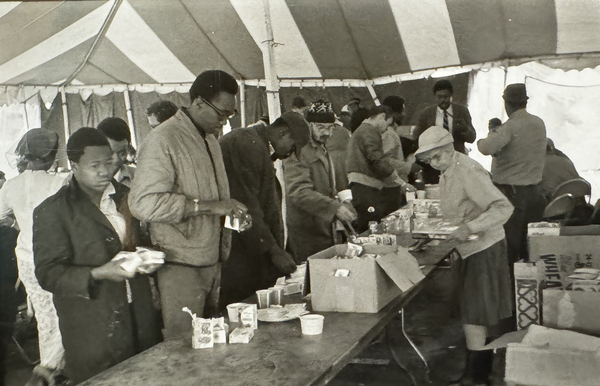
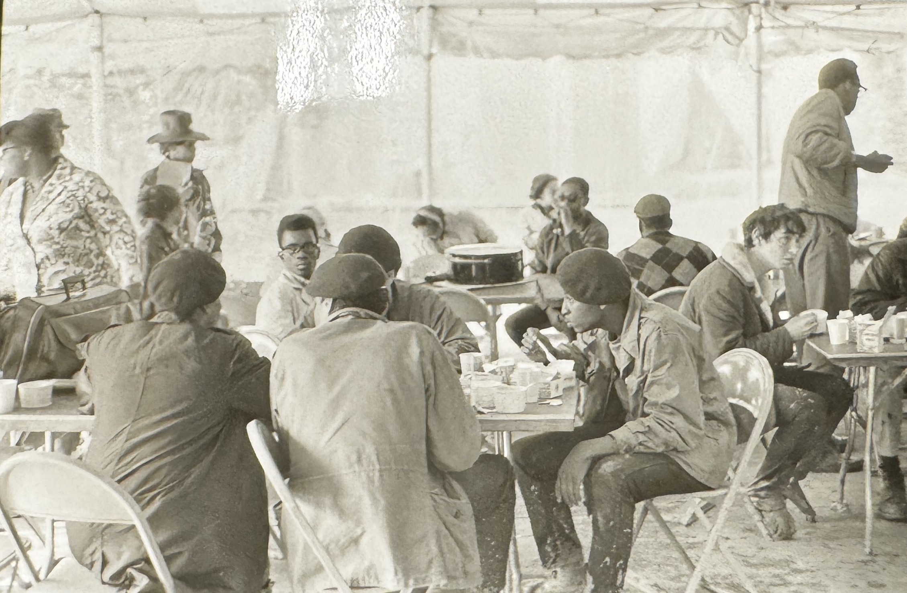
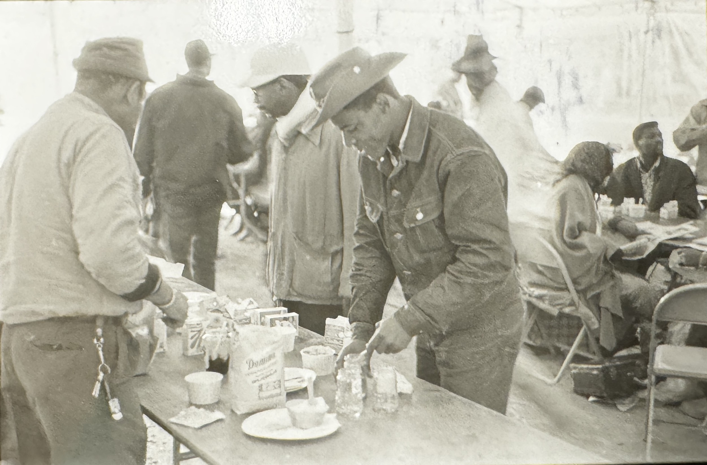
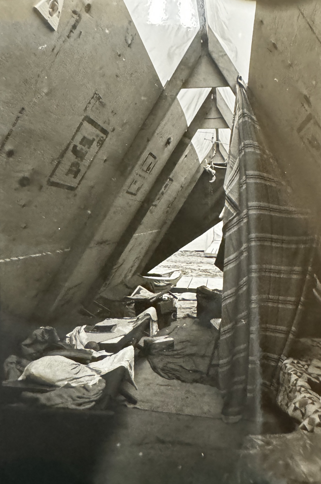
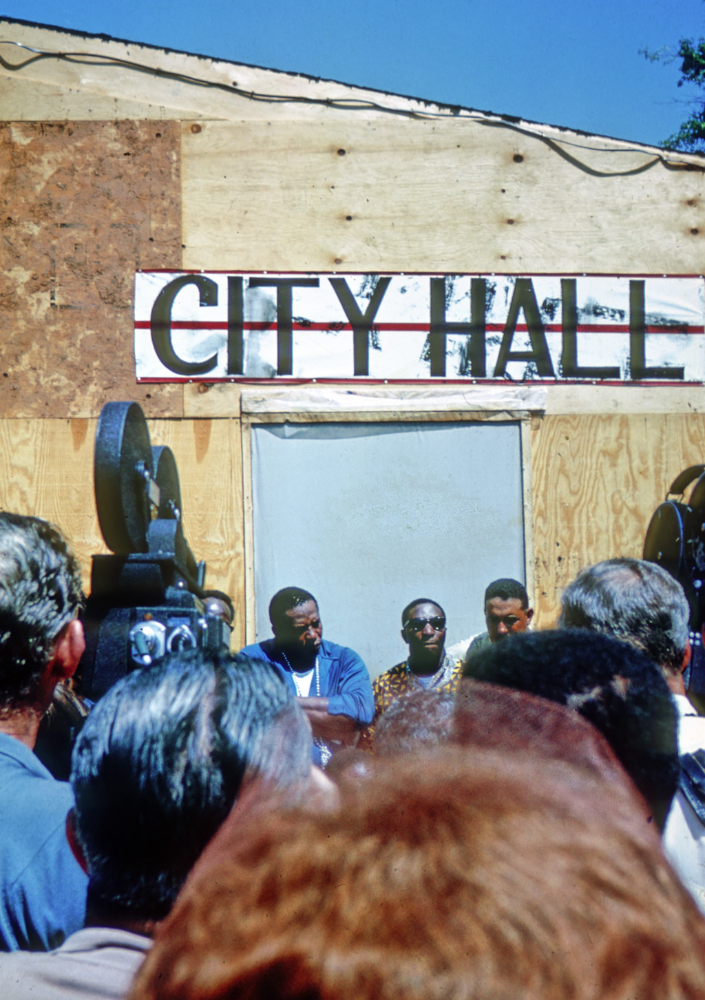
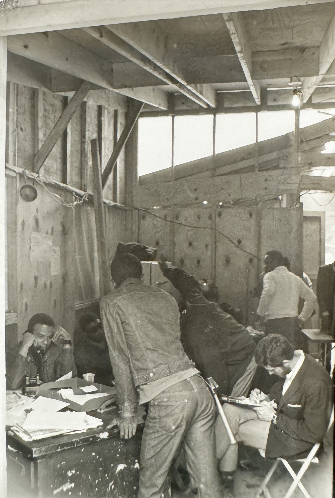

1. Entrance
Resurrection City, the “City of Hope,” officially opened on May 13, 1968. After extensive negotiations over site selection with the National Park Service, the White House, and the Justice Department, representatives from the SCLC and Poor People's Campaign obtained a 4-week permit to set up the encampment on a 16-acre site of West Potomac Park. Bounded by the Reflecting Pool, Independence Avenue, the Lincoln Memorial, and Seventeenth Street NW, Resurrection City would be constructed by a team of volunteers over the next several weeks, starting from the end closest to the Lincoln Memorial.
This photograph shows a view of the Registration tent just inside the City's boundaries. Protestors, many arriving via caravans that shepherded thousands of protestors a total of 13,000 miles across the country, filtered into Resurrection City through this entry way at the Lincoln Memorial.
Note the various types of structures visible in this image: hand-crafted shacks; plywood, triangular “tents”: and circus tents housing larger gathering spaces. These larger spaces served as information centers for new arrivals and visitors, as well as central meeting spots for marches and lobbying efforts throughout the District.
Also note the condition of the ground in this photograph, which was likely taken several weeks into Resurrection City. The encampment was plagued almost from the start by heavy rainfall that quickly flooded this low-lying land next to the Tidal Basin along the Potomac River. The weather created quagmires of mud for residents to navigate - and also flooded their sewage and drainage systems, endangering public health standards and dampening morale. Residents and planners improvised, laying down a network of wooden planks throughout the City. Tunney Lee, an architect and planner from MIT involved in the early design stages of Resurrection City, noted that interiors of residential and service structures - from the humblest lean-to to the larger, more complex City Hall - remained protected from the elements. But the saturated earth was a persistent problem throughout the 43-day encampment.
2. Donation Tent
To the left of the Lincoln Memorial entryway, the Donation Tent was another popular gathering and organizing spot for residents of Resurrection City. Here, residents could find and swap clothing, toiletries, tools, and sundries. Resurrection City was supported by myriad charities and community organizations, near and far, many of whom had coordinated with the Poor People's Campaign before and during the caravans. Donated goods weren't limited to day-to-day needs - 300 gallons of paint and chairs and tables for the children's day care center were also donated to the encampment.
On the edge of Resurrection City, not far from the entrance adjacent to the Donations Tent, a multi-agency coalition of health care providers set up a medical services and dental services trailer for residents. Medical teams began treating residents within the first week of opening, building on the extensive organizing and planning work of the Poor People's Campaign. Prior to departure, caravan participants across the country were screened for infections and offered medical treatment to limit the spread of contagious illness. This organizational infrastructure helped to support the efforts of health care providers in Resurrection City, who treated residents for illnesses and injuries incurred onsite and for chronic, long-standing conditions that stemmed from years of living in poverty. By mid-June, the medical team had installed a 75-foot trailer, complete with a pharmacy, lab, two exam rooms, a mental health room, and a waiting room, while dispatching groups of volunteers to circulate within the camp and provide treatment to residents.
3. Walking down Main Street
The rains started on May 23, and would continue for 11 of the next 14 days of Resurrection City. Over the course of the encampment, a total of 7.36 inches of rain would fall. At one point, the lowest-lying areas of the camp were under 6 inches of water. The wooden platforms, installed by volunteers and residents, offered some relief to inhabitants trying to navigate the muddy ground.
This image illustrates several important dimensions of Resurrection City's infrastructure. The aforementioned walkways, installed to mitigate the impact of heavy rains, kept people flowing on the City's Main Street. Main Street was the primary hub for communication-related services, from physically moving individuals from place to place to share information and gossip, to the electricity powering the City's PA system. The cables crossing the center of this photograph transmitted electricity and telephone communications. Loudspeakers scattered throughout the encampment shared messages from City Hall about lost children or announced protests and marches.
Over the course of Resurrection City's 43-day span, 540 tents (mostly simple plywood structures) would be constructed by teams of residents and volunteers to house nearly 3,000 people at its peak in early June. For this “City of a Thousand Designers,” planners sketched out a site that prioritized function over symbolism and form, inspired by the principles of classical modernist city planners and incorporating traditional elements like “Main Street.” Most of the construction occurred during the first two weeks of Resurrection City, sometimes building at a rate of one tent every fifteen minutes. Resurrection City had its own zip code (20013) and its own flag.
4. Dining Tent
John Wiebenson, one of the architects and planners behind Resurrection City's technical planning, organized the encampment at multiple scales. The single residential tent - a small one for families or a larger one for groups of five-six individuals - comprised the smallest scale. Units of nine residential tents, along with a toilet and shower facility, made up the next scale for a cohort of about 50 people. These units were then organized into four large compounds of roughly 200 people, complete with a group leader. These four large compounds were then grouped together to share a dining tent on Main Street.

Dining tent interior with food being served. Photo by John Vachon for Look Magazine. Library of Congress.
During the planning phase, Wiebenson and his colleagues projected that at least three dining tents would operate in Resurrection City to serve all 3,000 residents. Unfortunately, the dense clusters of trees at the perimeter of the encampment - which provided shade, privacy, and shelter - limited the scale of the planners' ambitions. In the end, only one dining tent, pictured here, operated to feed the residents of Resurrection City. The heavy rains at the end of May caused the dining tent to collapse temporarily.

Dining tent interior with people eating. Photo by John Vachon for Look Magazine. Library of Congress.
Food provision throughout the six weeks of the encampment was strained by limited resources. Demonstrators solicited private organizations, church groups, and the DC Health and Welfare Council for support, and Giant Foods, Inc., contributed 185,000 meals over the course of the month. Hot meals were rarely provided.

Dining tent serving food. Photo by John Vachon for Look Magazine. Library of Congress.
Despite the many challenges facing organizers and residents, the dining tent, like other common spaces in Resurrection City, served a vital function as a gathering spot, where news, gossip, advice, support, and food could be swapped and shared.
5. View down Main Street
According to Wiebenson, the primary criteria that guided design and construction in Resurrection City were:
- The provision of shelter and services for residents soon after their arrival
- A "severe economy" of materials that welcomed improvisation
- The full use of all available labor resources - volunteer labor was available in abundance
- Durability of structures and infrastructure
- Protection from the elements
Planners and the demonstration's leadership had to grapple with several competing constraints and demands to both build Resurrection City and sustain it. The land, owned and stewarded by the federal government, could not be significantly altered. The dense groves of deciduous trees around the perimeter that hampered spatial cohesion for residential blocks had to remain intact. Organizers laid down planks and sheets of plywood to navigate the encroaching muddy swap, rather than truck in gravel. The extensive drainage systems that this population needed to support showers and handwashing sinks couldn't be built, forcing many residents to travel offsite to bathe. These limitations had significant impacts on day-to-day life within Resurrection City. As Wiebenson wrote, “As it happened…Resurrection City became more a demonstration of conditions that exist rather than those that could be.” In many ways, the material experience of life in Resurrection City mirrored the poverty and deprivation of residents' hometowns.
But Resurrection City wasn't just a victim of bad luck with the weather or highly constrained plans and construction - it was also indelibly shaped by the extraordinary scale of multi-agency government surveillance throughout the encampment, including the Poor People's Campaign caravans. It is estimated that an intelligence report from Resurrection City was generated every 30 minutes by the Interdivisional Intelligence Unit (comprised of the FBI, US Army Intelligence, US Border Patrol, the NPS Police, and the Metropolitan Police Department). The FBI, still under the leadership of J. Edgar Hoover, was particularly aggressive in intelligence gathering and relied on a combination of undercover agents and phone taps. Some informants were recruited through the notorious COINTELPRO program as early as 1967 to infiltrate the various civil rights and Black Power organizations active in the Campaign. It was rumored, even during the period of the encampment, that undercover agents and assets deliberately stoked political and social unrest to destabilize the community and political leadership of Resurrection City.
Much of the archival documentation we have on the day-to-day experiences of living in Resurrection City draws on these intelligence reports, which are remarkably detailed. It is the great irony of much of African American history that such a large measure of the archival evidence of political struggle can only be found in the records of state-sanctioned oppression. The case of Resurrection City is no different.
6. Inside Tent
Over the course of Resurrection City, 540 plywood tents would be constructed in two sizes: slightly smaller structures that could accommodate families, and larger structures for groups of five to six individuals.

Tent interior 2. Photo by John Vachon for Look Magazine. Library of Congress.
Shelters were constructed mainly by the people who would inhabit them. The simple design and materials used for the residential structures lent themselves to prefabrication systems, which encouraged residents at every skill level to participate and contribute. Residents had free rein to customize their homes, whether by painting different slogans, names, or designs on them, or even creating second stories or decks with extra materials. On one tent, residents painted "I Have Lived in Many Houses. This Is My First Home."
7. City Hall
Resurrection City Hall was located on Main Street, the central spine of the encampment and its main public space. City Hall served as a gathering point for residents, a point for printed and audio announcements to be posted, and the SCLC headquarters.

Ralph Abernathy outside City Hall. Photo by John Wiebenson. University of Maryland.
Ralph Abernathy, pictured below, took over leadership of the SCLC after Martin Luther King, Jr.'s assassination earlier that spring. Abernathy arrived in Washington, D.C. to open Resurrection City on May 13, 1968, and drove the first stake into the ground. Day-to-day leadership, however, was handled by different leaders of the civil rights movement, including Rev. Jesse Jackson, who was briefly the City Manager before returning to Chicago.

City Hall interior. Photo by John Vachon for Look Magazine. Library of Congress.
City Hall was an important base of operations: a centrally-located, well-constructed shelter with electricity and phone access where residents could organize for daily marches and lobbying efforts. Although much of the SCLC senior staff, including Abernathy, lived offsite at the nearby Pitt Motel, they spent most of their time onsite in City Hall.
8. Coretta Scott King Day Care Center
During the planning phase, the SCLC had plans to set up Freedom Schools for older children while parents were marching and lobbying, while young children and babies would spend their days at a day care center operated by the National Capital Area Child Day Care Association. Unfortunately, there were not enough resources or staff to run Freedom Schools, and the day care center stood as the only childcare resource for the entire encampment.
During the first days of Resurrection City, while construction was in full swing, children were bussed to offsite churches for day care. Resurrection City's day care was located on Main Street, several yards beyond City Hall towards the Washington Monument. The structure was roughly 20'x6' and housed three separate classrooms, along with a porch running the length of the center. Chairs and tables, along with chalkboards, toys, and clothing, were donated by area charities and churches.
Within the building, one room was reserved for infants, with cribs and small beds. The remaining rooms were used by teachers, staff, and students for recreation, lessons, snack time, and naps. Much of the staff were social workers, teachers, childcare workers, and some were SCLC members using their vacation time to be at Resurrection City.
Although the SCLC leaders had planned on a student-teacher ratio of 8:1, it quickly became clear that there were too many children onsite for the five permanent volunteers and a rotating staff of part time volunteers. Older children were taken off-site on field trips by volunteers from Georgetown University and Washington, D.C., to sightsee, get lunch, and receive hot baths. Younger children at the day care center had music time, story time, a snack, and lunch. Most of the day care center's food came from the nearby God's Eye Bakery in Resurrection City.
Although the Freedom School never officially opened or matriculated students, it was constructed early that summer. A blackboard inside the unused building read:
TODAY'S LESSON: VIOLENCE
- Why is there robbing and killing in the street?
- Why are there people hungry?
- Why are we here?
9. Solidarity Day
At 10am on June 19th, 1968, over 50,000 people gathered at the Lincoln Memorial for Solidarity Day. The event marked both the culmination and symbolic end of Resurrection City, which would be torn down by police and vacated by protestors within the week.
Protestors and organizers created thousands of signs and placards and prepared bag lunches for the enormous crowd for Solidarity Day. Prominent Civil Rights activists, including Coretta Scott King, Ralph Abernathy, Rev. James Bevel, and Reies Lopez Tijerine, along with representatives from the National Council of Negro Women, the JOIN Community Union, the Negro American Labor Council, the Welfare Rights Organization, the UAW, and others all delivered speeches.
Various agencies in the federal government had been closely monitoring the plans for Solidarity Day. Nash Castro, a central official of the National Park Service and direct liaison with the Poor People's Campaign, referenced the extensive intelligence gathered by federal agencies that helped them estimate the number of people and buses that would arrive at the Mall and where they were coming from.
Planning for Solidarity Day was originally the responsibility of Bayard Rustin, whose organizing prowess had been proven during the March on Washington in 1963. Conflicts between Rustin and other senior SCLC leadership forced Rustin to resign only two weeks into his tenure, and D.C. Urban League Director Sterling Tucker was placed in charge of the event. By all accounts, Solidarity Day was considered a huge success and achievement for the coalition that convened a huge multiracial, multiethnic group of demonstrators from across the country. Nearly all of the protestors who had come in for Solidarity Day left peacefully shortly after the event.
Within days, however, the peaceful conditions deteriorated. Police confronted demonstrators in Resurrection City the next day, and the situation escalated quickly. Over the next several days, violent conflicts between police and protestors continued, prompting the National Park Service to deny SCLC with a permit extension request for Resurrection City. The encampment was emptied and demolished by the Park Police.
10. Conclusion
Resurrection City was cleared by over 1,000 police officers on June 23rd and 24th. Over 300 people would be arrested, including Ralph Abernathy, for an illegal protest march that day. Although this area of Potomac Park would be converted back into the grassy lawn we recognize today, the concerted efforts of thousands of protestors made a lasting impact on how symbolic, national landscapes like the National Mall can be used and remembered. Civil Rights leaders and a multiracial, national coalition of people came together to reimagine this space as a foundation for political and social change by building an entire city from the ground up.
Navigate back to the base map to take a closer look at the various structures and use types in Resurrection City, or continue on to the “Afterlives” exhibit to understand how Resurrection City's legacy has changed over the years.
Bibliography
Walter E. Afield, M.D. and Audrey B. Gibson. 1970. Children of Resurrection City. Washington, D.C.: Association for Childhood Education International
Gloria Billings. August 1968. “Health Care in Resurrection City” American Medical Journal 68(8): 1695-1698.
Tunney Lee and Lawrence Vale. 2013. “Resurrection City: Washington, D.C., 1968.” Thresholds 41: 112-131.
Gerald D. McKnight. 1998. The Last Crusade: Martin Luther King, Jr., the FBI, and the Poor People's Campaign. Boulder, CO: Westview Press.
Lauren Pearlman. 2019. Democracy's Capital: Black Political Power in Washington, D.C. Chapel Hill: University of North Carolina Press.
Lauren Pearlman. 2014. “More than a March: The Poor People's Campaign in the District. Washington History 26(2), 24-41.
John Wiebenson. 1969. "Planning and Using Resurrection City." Journal of the American Institute of Planners 35:6, 405-411.